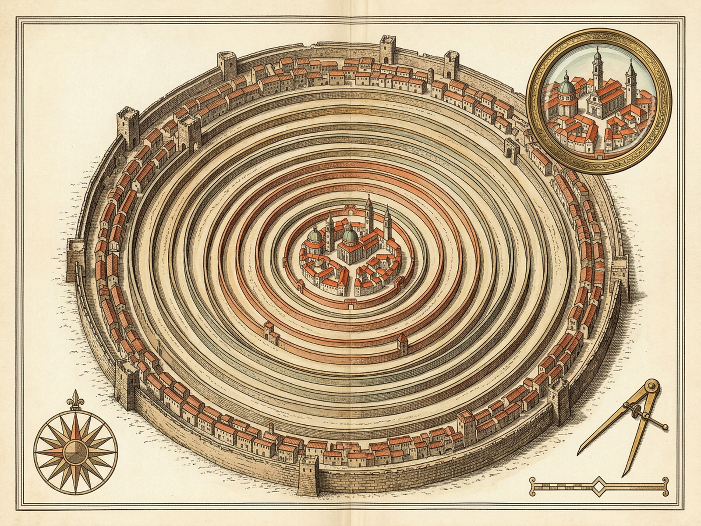
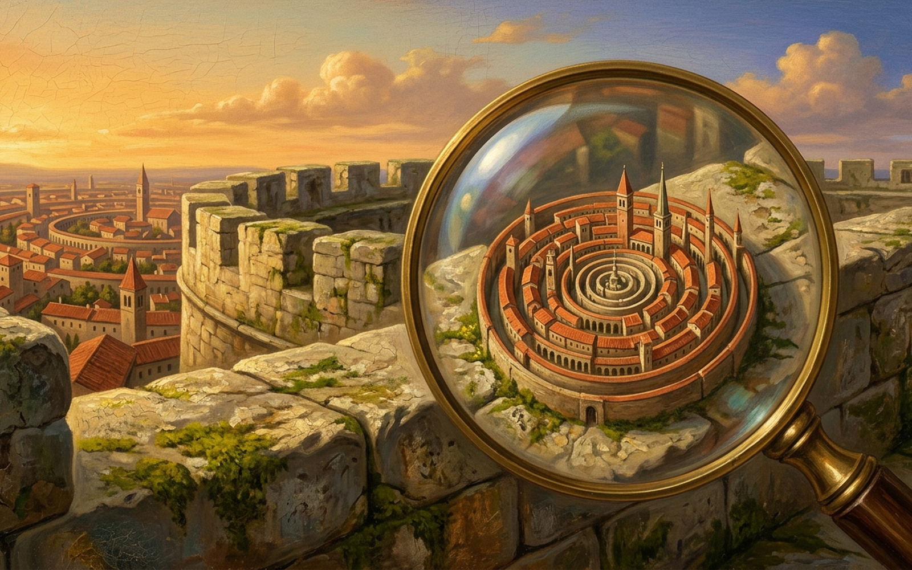

45 · OLINDA · HIDDEN CITIES 1Seek with a magnifying glass: a pinhead swells year by year inside the old walls, pressing earlier quarters outward.year0concentricRingsCount1generations2oldWallsDestroyedfalsePinhead Nucleus Loupe×1.0 · searching0 / 8 resolvedRoofsGardensPoolsAntennasSkylightsKiosksStreamersRace TrackAnnual Meristem VernierpinheadDrag the brass magnifying glass over the central glint; zoom past ×8 to inspect the nascent city.lens 0.62, 0.58Ring Lineage & Girdles2 ringsOld walls never fall: towers, churches, palaces, and theaters stretch into narrow outer girdles as new rings press from within.


Survey Map · Concentric cambium girdles and innermost meristem of Olinda (1600×1200)1600×1200